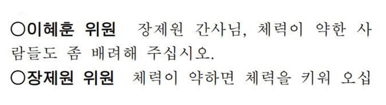

대한민국국회실록은 가장 많은 눈이 쏠려 있는 곳인 국회의 시시콜콜함을 기록해 놓은 회의록을 DB화 해 1_ searchable, 2_playable한 형태로 제공하는 서비스 입니다.

팩트체크, 원자료를 활용한 기사 쓰기, 적극적인 뉴스 소비의 목적을 달성하기 위해 검색 가능한 형태로 회의록을 제공하고, 자신이 발견한 중요한 회의록 내용을 다른 사람과 공유할 수 있는 하일라이트 기능과 크롬 익스텐션을 통한 직접적인 팩트체크 기능은 뉴스 소비자의 적극적인 뉴스 활용을 가능하게 하고 정치에 대한 접근성을 높여줍니다.
팀 쨈 Jjam
Project Manager 장슬기 Developer 이두희 Designer 이준원
For 2019 Google Media Hackathon